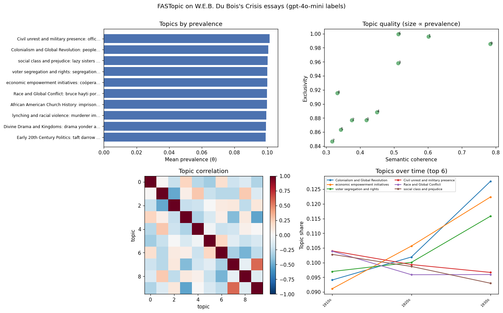

LLM embeddings and labels: Du Bois's Crisis essays¶
This worked example runs the embedding-native path end to end with the
llm library doing the two jobs that touch a model:
generating the document embeddings and naming the topics. Everything between is
pure topica. The corpus is the 704 essays W. E. B. Du Bois wrote for The Crisis
between 1910 and 1934 (the same corpus as the Du Bois example, here
modeled from sentence embeddings rather than word counts).
Focus of this example
llm_embed (cached) · an embedding model (FASTopic) · llm_topic_labels ·
plot_report. For the count-based workflow on this corpus see
Du Bois.
pip install "topica[llm,viz]" covers llm (OpenAI built in) and the ollama
plugin. The local sentence-transformers embedder below additionally needs
pip install llm-sentence-transformers; for a fully local, torch-free run use
ollama embeddings (all-minilm) instead. Reproducible with
examples/llm_topics.py.
1. Corpus¶
import csv, topica
rows = list(csv.DictReader(open("examples/dubois_crisis.csv")))
texts = [r["text"] for r in rows] # raw essay text for embedding
decade = [f"{r['decade']}s" for r in rows] # 1910s / 1920s / 1930s
stop = open("examples/english-stoplist.txt").read().split()
docs = [topica.tokenize(t, stopwords=stop, min_length=4) for t in texts] # tokens for the model
2. Embed — once, cached¶
llm_embed produces the document-vector matrix the embedding models need. Naming
a local sentence-transformers model keeps it offline and free; cache= writes
the matrix to disk so re-running the script reloads it instead of re-embedding
(embeddings are the costly step).
doc_emb = topica.llm_embed(
texts, model="sentence-transformers/all-MiniLM-L6-v2", cache="crisis_emb.npz"
)
doc_emb.shape # (704, 384)
3. Model¶
FASTopic reads topics off optimal-transport plans between the document, topic,
and word embeddings — mixed-membership, so every essay gets a topic distribution.
model = topica.FASTopic(num_topics=10, seed=1)
model.fit(docs, doc_emb, iters=200)
for t in range(model.num_topics):
print(t, " ".join(w for w, _ in model.top_words(6, topic=t)))
0 lazy sisters manners latin antipathy hawaii
1 peoples africa revolution india religion british
2 murderer imprisonment unconstitutional murders punished lynchers
3 drama yonder almighty thou king shadows
4 coöperative consumers survey agricultural pays capitalize
5 imprisoned toussaint petition legion bentley methodist
6 officers miss night street louis town
7 taft darrow wilson's woodrow appointment politician
8 bruce hayti porters sympathize pullman ireland
9 segregation voters votes republican voting vote
4. Name the topics with an LLM¶
topica is the plumbing: it builds a prompt from each topic's top words and
representative essays, and you bring the model. temperature=0 keeps the labels
stable, and set_labels=True stores them so they flow into topic_info and the
report.
backend = topica.llm_backend("gpt-4o-mini", temperature=0)
labels = topica.llm_topic_labels(model, texts, call=backend, set_labels=True)
for t, label in enumerate(labels):
print(t, label)
topica.topic_label_prompts(model, texts)[1] # inspect exactly what the model saw
0 social class and prejudice
1 Colonialism and Global Revolution
2 lynching and racial violence
3 Divine Drama and Kingdoms
4 economic empowerment initiatives
5 African American Church History
6 Civil unrest and military presence
7 Early 20th Century Politics
8 Race and Global Conflict
9 voter segregation and rights
The key is resolved by llm: by default the OPENAI_API_KEY environment variable
(or a stored llm keys value), or pass llm_backend(..., key=...) to hand one in.
A local model works the same way — llm_backend("llama3.2", ...) with the
llm-ollama plugin needs no key at all. The deterministic descriptors
(label_topics: FREX / probability / lift) remain the defensible naming for
publication; the LLM labels are the readable shorthand. With set_labels=True they
replace the default labels everywhere, including the report below.
5. Report¶
fig = topica.plot_report(model, texts=docs, timestamps=decade, n=6,
title="FASTopic on W.E.B. Du Bois's Crisis essays")
fig.savefig("crisis_report.png", dpi=200)

This figure is real output of the whole pipeline above — MiniLM embeddings, the
FASTopic fit, and the gpt-4o-mini labels from step 4 (the labels appear because
set_labels=True stored them). The time panel reads as intellectual history:
Colonialism and Global Revolution and economic empowerment initiatives climb
steadily from the 1910s to the 1930s, tracking the arc of Du Bois's later writing.